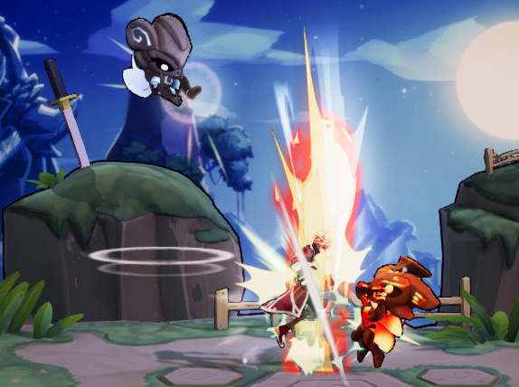
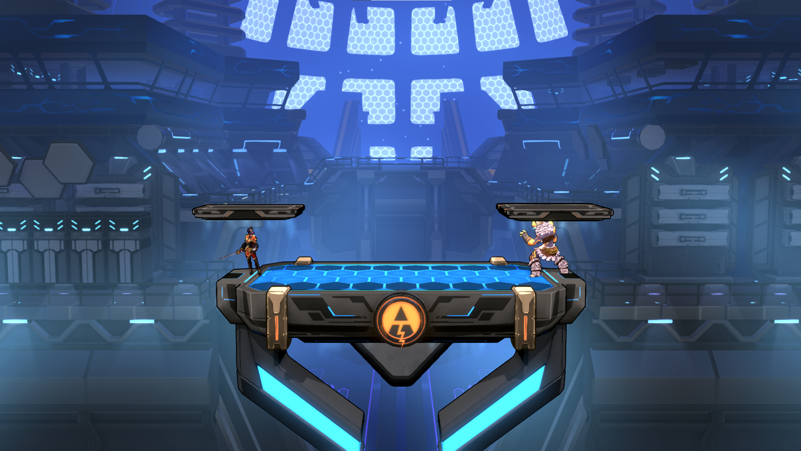

Visual overhaul
Making tiny shapes readable at breakneak speeds.

Throughout most of the development of Rushdown Revolt we had to battle the issue of keeping relatively small character silhouettes readable and distinct while they are flying all over the place. Icons had decided to use gamma color space for their rendering pipeline, which lead to over saturated colors and extremely bright colors wherever there was any sort of blending going on. Eventually we decided to rip the band-aid off and migrate to a linear color space, which required fine-tuning almost every graphical asset. During this project i took the time to overhaul most of our visuals to make characters stand out better from the background, and generally make everything look a bit nicer.
Stage backgrounds were desaturated and the details on parts that would overlap with the characters were simplified, while characters recieved new shaders and their own lighting setup to help them stand out from the background.
